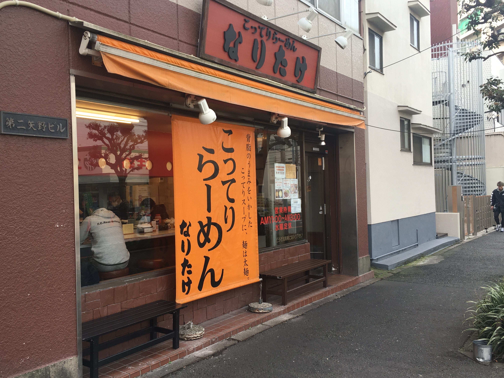

Distance from station
350 meters from JR Tsudanuma Station
phone number
047-477-7987
place
〒274-0825 2-11-7 Maebaraishi, Funabashi-shi, Chiba
business hours
11:00~27:00
Regular holiday
Wednesday
・Return to the ramen list